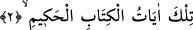
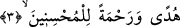
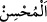

Bazıları, hurûf-i mukattaanın sûrelerin temelleri ve ibret hazinelerinin anahtarları
olduğunu söylemişlerdir. Burada bu üç harfle şu mânâya işâret edilmiştir: “Ben
Allâh’ım. Kemal sıfatlarının hepsi bana aiddir. Gufran ve ihsan bendendir.”
Bazıları da şöyle demişlerdir: “Elif” âriflerin ülfetine, “Lâm” Allâh’ın ihsan sâhibi
kullarına muâmelesinin yumuşaklığına, “Mîm” de âşıkların kalblerindeki muhabbetin
alâmetlerine işârettir.”
Bir kısmı ise şu izahı yapmışlardır: “Yüce Allah “Elif” ile nîmetlerine, “Lâm” ile
lütuf ve ihsânına, “Mîm” ile mecd ve senâsına (yüceliğine ve övgüsüne) işâret eder. O,
nîmetleriyle evliyânın kalbinden her türlü inkâr izlerini siler, lütuf ve ihsânıyla
asfiyâsının en gizli yerlerine muhabbeti yerleştirir. O, mecd ve senâsıyla da, kibriyâ
(büyüklük, ululuk) vasfına sâhip olarak bütün mahlûkatından müstağnidir.
Sa‘dî der ki:
Kibriyâlık ve benlik O’na yaraşır;
Çünkü mülkü kadîm, zâtı da ganîdir
2. İşte bu âyetler, hikmet dolu Kitab’ın âyetleridir.
“İşte bu” sûre ve onun âyetleri, “hikmet dolu” yâni ihtivâ ettiği hikmetler sebebiyle
hikmet sâhibi veya değiştirme ve başkalaştırmadan korunmuş, bozulmaktan ve hükümsüz
hale gelmekten muhâfaza edilmiş sapasağlam “Kitâb’ın âyetleridir.”
3. Güzel davrananlar için bir hidâyet rehberi ve rahmet olmak üzere
(indirilmiştir).
“Güzel davrananlar” yâni, güzel ameller işleyenler “için” sapıklıktan kurtaracak “bir
hidâyet rehberi ve” azabdan koruyacak bir “rahmet olmak üzere (indirilmiştir).”
Bâzıları şöyle der: “Allah Teâlâ, içindeki kurtuluşa götüren sebepler ve hayırlı işlere
sevk eden incelikler yüzünden Kur’ân’ı “hidâyet rehberi (hüdâ)” diye isimlendirmiştir.
Gerçekten Kur’ân, âbidler için bir rehber ve rahmet, ârifler için de bir delil ve
huccettir.”
et-Te’vîlâtü’n-Necmiyye’de der ki: “Kur’ân, doğruyu gösteren bir hidâyet rehberi ve
kendisine sarılana rahmettir. İçine konulan cezbelerle o kimseyi Allah Teâlâ’ya ulaştırır.
“
” kelimesi mutlak olarak kullandığı zaman ancak mü’minler için övgü ifâde
eder.